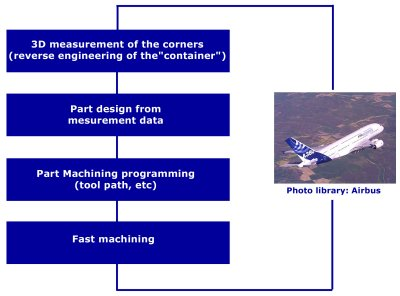
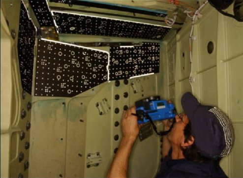
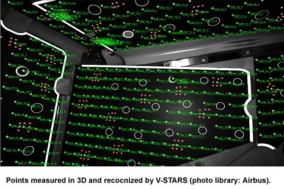
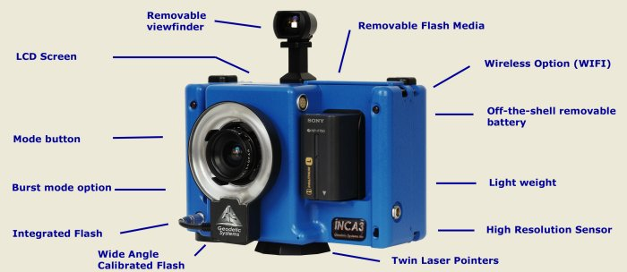

|
Airbus'
ýn Toulouse Fransa'daki A380 montajýndan sorumlu mühendisleri
için en önemli konu "ilk seferde doðru yapmak"tý.
"Uçan
Dev" A380 montajýndaki en kritik adýmlardan birisi de
kanatlarýn gövde ile birleþtirilmesiydi. Bu hassas operasyon
çok iyi derecede planlama ve uzmanlýk gerektiriyordu. Kanat
gövde birleþtirilmesinde kullanýlacak köþe "fitting"lerinin
üretimi konusu bu operasyondaki en kritik adýmý oluþturuyordu.
Bunlar çeþitli serbest form yüzeylere oturmasý gereken karmaþýk
parçalardýr. Kanat gövde birleþiminin uygunluðunu en iyi þekilde
saðlamak için mevcut parçalara olabildiðince uyumlu üretilmeleri
gerekmekteydi. Baþka bir deyiþle, her uçak montajýnda kendisine
özel olarak üretilmiþ köþe fittinglerin kullanýlmasý zorunluluðu
vardý. Toplamda iki kanat için bu parçalardan 22 adet üretilmesi
gerekiyordu. Bu kadar parçanýn kýsa bir zamanda ve hassas
bir þekilde üretilebilmesi için karþýlýk gelen her diþi köþenin
hýzlý ve hassas bir tersine mühendislik çalýþmasýna ihtiyaç
vardý.
Montaj
sýrasýnda 22 parçanýn karþýlýk gelen parçalara tam olarak
oturmasý için; ön hazýrlýk, karþý parçalarýn 3D ölçümlerinin
yapýlmasý, köþe parçasýnýn tasarýmý, 5-eksen takým yolu programlasýný
yapýlmasý gerekiyordu ve bu iþlemlerin toplam 33 saat için
de tamamlanmasý planlanmýþtý.
Böyle
zorlu bir hedefin baþarýlmasý için Airbus 3D fotogrametri
ölçüm sistemi V-STARS'ý seçti. Çünkü V-STARS gerekli hassasiyet,
hýzlý data toplanmasý, kolay kullaným ve taþýnabilirlik (INCA
kamera ve kablosuz çalýþabilme) dolayýsýyla kanat içinde operatör
tarafýndan kullanýlabilmesi gibi kriterleri baþarý ile saðlýyordu.
Ayrýca devam eden üretim ortamýnda çalýþabilme, titreþim,
sýcaklýk deðiþimi, dar bir çalýþma alaný gibi çevresel koþullarda
da sistem ile çalýþýlabiliyor olasý bir avantajdý.. Çünkü
ölçümler sýrasýnda, üretimin ve montaj aktivitelerinin durdurulmasý
mümkün deðildi.
Yandaki
diagramda, köþe "fitting"lerinin ana montaj adýmlarý
gösterilmiþtir.
- Köþelerin
3D ölçümü (Karþýlýk gelen diþi köþelerin tersine mühendislik
çalýþmasý)
- Ölçüm
verilerine baðlý olarak parça tasarýmý yapýlmasý
- Parçalarýn
CNC tezgahlarda iþlenmesi için gerekli CAM programlamasýnýn
yapýlmasý
- Hýzlý
iþleme
Bu
anahtar teslim sistem, GSI firmasýnýn INCA3 dijital fotogrametri
kamerasýný kullanan en son kuþak V-STARS sisteminden oluþmaktadýr.
Hazýrlýk
zamanýnýn önemli ölçüde azaltýlmasýný saðlayan özel "retro
reflective" hedefler GSI firmasýnýn Fransa'daki teknik
servis ortaðý GMS tarafýndan tasarým ve uygulamasý yapýlmýþtýr.
Aþaðýdaki
resimde operatör A380 kanat içinde ölçüm yaparken görülmektedir
- (Kaynak: Airbus fotoðraf kütüphanesi):

Bu
özel tasarým hedefler (marker) , ölçüm yüzeyine çok hýzlý
bir þekilde yerleþtirilebilmekte, böylece data toplama ve
iþlem zamaný dakikalar içinde gerçekleþtirilebilmektedir.
Nokta bulutunun otomatik olarak iþlenmesiyle birleþme yüzeylerinin
mekanik iþlemesi için gerekli veriler elde edilmektedir.
Ölçüm
iþlemi için 25-30 civarýnda fotoðraf çekilmesi gerekmektedir.
Ölçüm ortamý çok dar olduðudan operatör her zaman göz ile
objektifin çekeceði alaný kontrol edememektedir. Bu yüzden
kamerada bulunan 2 adet laser iþaretleyici ýþýn kullanýlmaktadýr.
Sonuç olarak istenilen yerin fotoðrafý her türlü koþulda kolayca
çekilebilmektedir. Fotoðraflar çekildikten sonra kablosuz
iletiþim özelliði ile çalýþma bölgesi dýþýndaki bilgisayara
transfer edilmektedir. Airbus'ta ki bu baþarýlý V-STARS uygulamasý
ayný iþlemin A340 ve A320 modellerinde de uygulanmasýný mümkün
kýlmýþtýr.

INCA3
kamera:
INCA3
kamera, GSI firmasý tarafýndan özel olarak her türlü koþulda
ve ortamda yüksek hassasiyette 3D ölçümlerin yapýlmasý amacý
ile tasarlanmýþtýr. Üzerinde yüksek çözünürlükte CCD sensörleri
ve PC tabanlý endüstriyel bir bilgisayar bulunmaktadýr. Böyle
bir performans için gerekli "opto mechanical stability"
yanýnda, makinde data sýkýþtýrma (1'e 10) ve kablosuz veri
transferi özelliði de bulunmaktadýr.
Airbus
projesindeki gibi dar ve zor alanlarda çalýþma V-STARS için
bir problem teþkil etmemekte, bununla birlikte ölçülecek parça
büyüklüðünde bir üst sýnýr olmadýðý için rahatlýkla büyük
parçalarýn ölçümünde de kullanýlmaktadýr. Bu özelliði ile
V-SATRS özellikle havacýlýk/uzay, otomotiv, gemi inþa, enerji
ve aðýr endüstrilerde kulllanýlmaktadýr.
INCA3
tarafýndan fotoðraflarýn çekilmesinden sonra GSI firmasýnýn
V-STARS yazýlýmý ile bu fotoðraflar analiz edilmekte, gerekli
3D veriler çýkarýlmaktadýr. Bütün bu iþlemler otomatik olarak
gerçekleþtirilmektedir. Daha sonra ölçüm deðerleri, nominal
deðerler, CAD dosyasý veya daha önce yapýlmýþ ölçüm sonuçlarý
ile karþýlaþtýrýlabilmektedir. ("repeatibility - capability"
çalýþmalarý )

GSI
firmasý hakkýnda:
Geodetic
Systems Inc. (GSI) firmasý endüstriyel ölçme / metroloji alanlarýnda
uluslararasý pazarlarda endüstriyel fotogrametri çözümleri
sunmaktadýr. GSI, baþta havacýlýk ve otomotiv olmak üzere
çeþitli sektörlerde ölçüm ve kontrol uygulamalarýnda çalýþan
kullanýcýlara, V-STARS altýnda 3D koordinat ölçüm sistemleri
geliþtirmekte ve pazarlamaktadýr. INCA3 GSI firmasýnýn sunduðu
teknolojinin en üst noktasýnda bir dijital fotogrametri kamerasýdýr.
Sistem, Türkiye'de BVA Mümessillik Ltd. tarafýndan temsil
edilmektedir.
Daha
fazla bilgi için: v-stars3d.com
 Ýrtibat: Ýrtibat:
Bülent
Özgür
bulento@bva.com.tr
BVA Mümessillik Makina Tic. Ltd. Þti.
Bayar Cad. Gülbahar Sok. EgeYýldýz Sitesi B Blok Kat: 5 D.16
Kozyataðý Ýstanbul
Tel: (216) 658 80 05
Faks: (216) 658 80 06
www.bva.com.tr
www.nti-measure.com/...
|